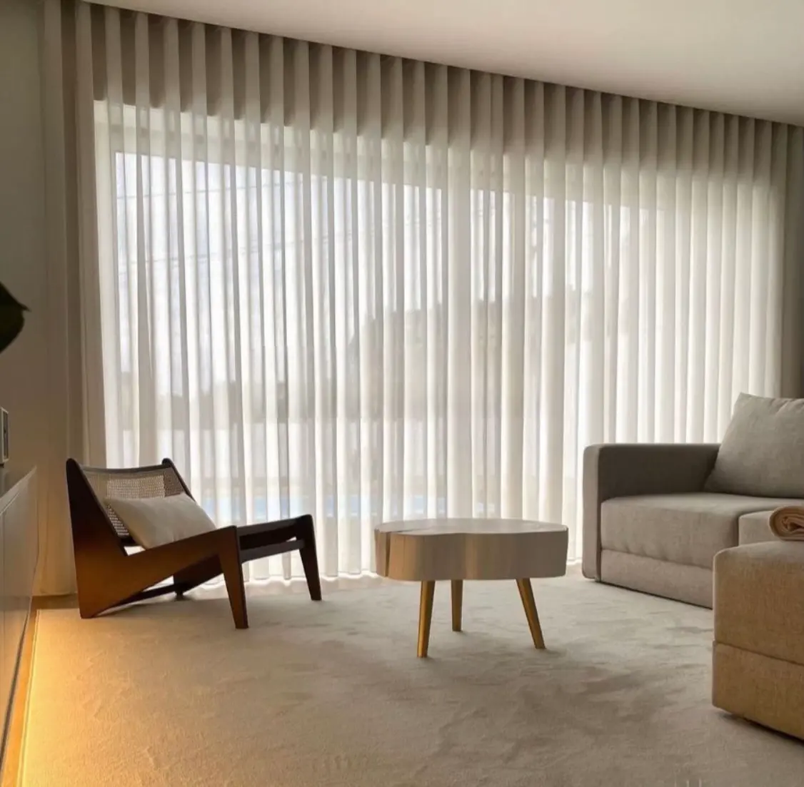
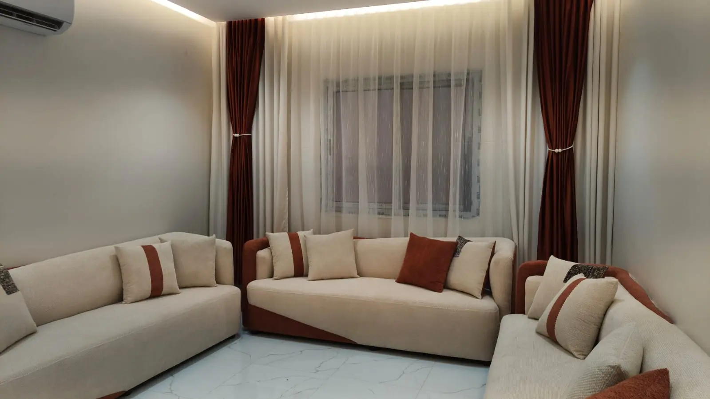
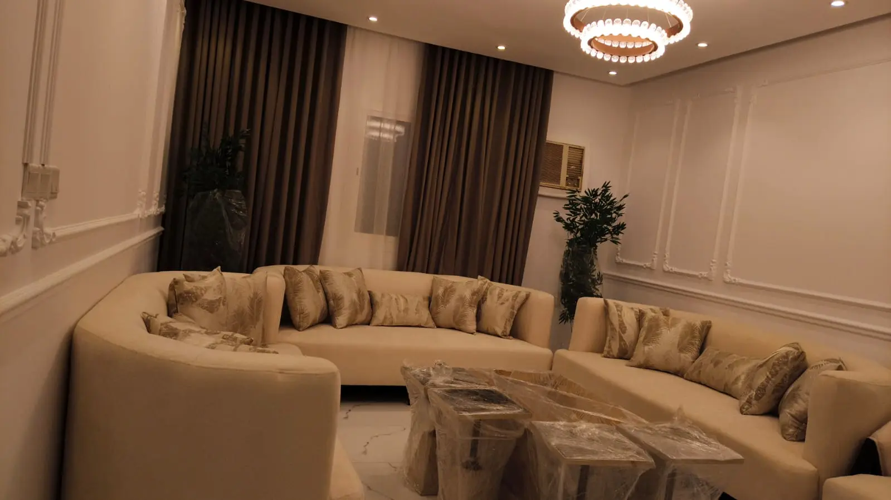
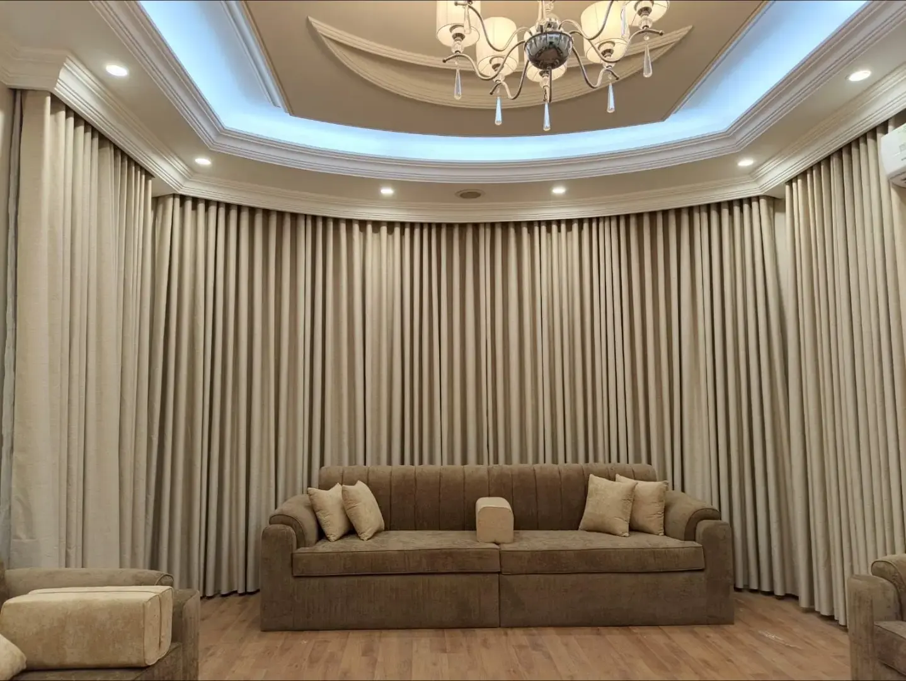
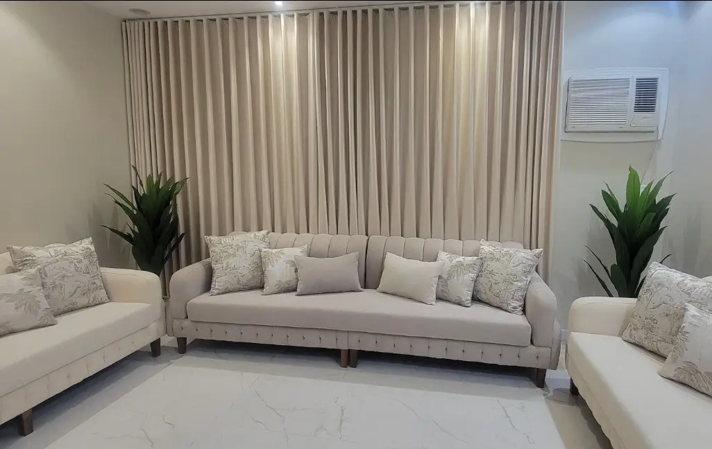
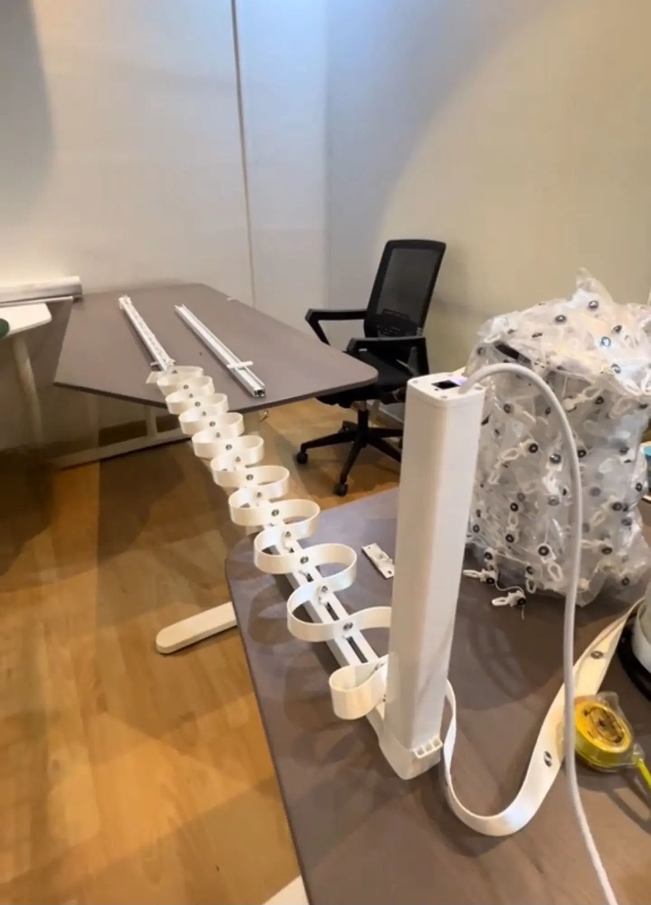
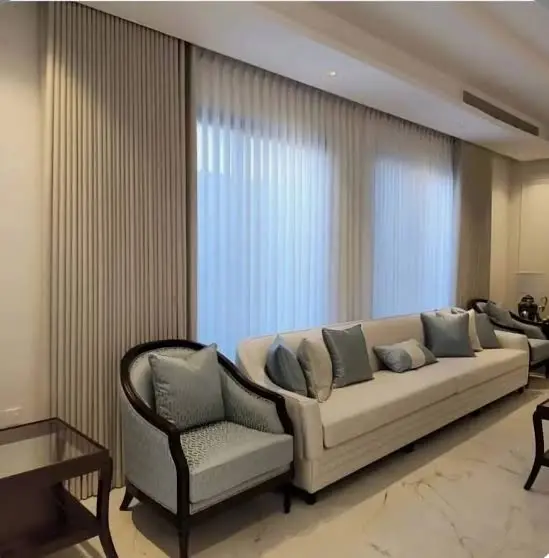
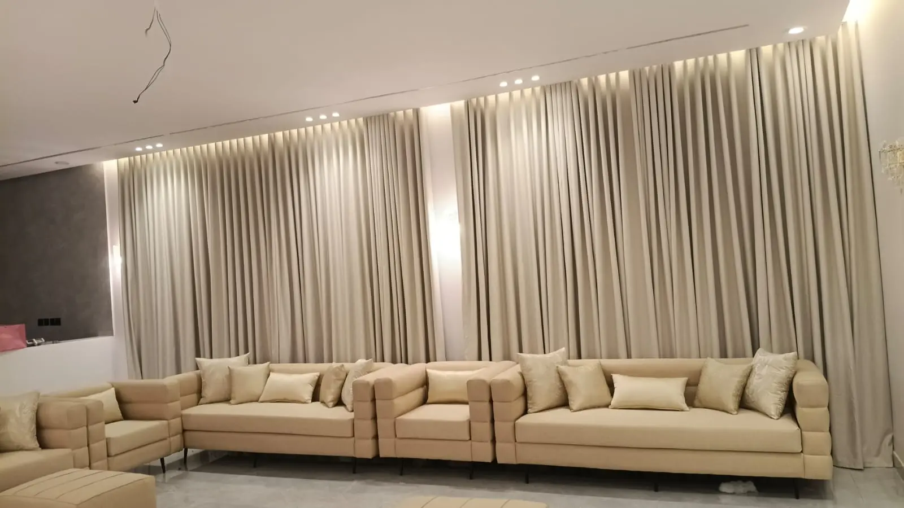

تفصيل ستائر ويفي حسب المقاس
تفصيل الستائر بالمقاسات الفعلية للموقع مع مراعاة الارتفاع والعرض وطبيعة التصميم الداخلي.
- مناسبة للصالات والغرف والمجالس
- تموجات متناسقة ومظهر حديث
- تنفيذ يلائم طبيعة الاستخدام
نوفر خدمة تفصيل وتركيب ستائر ويفي حسب المقاس مع اختيار الخامة المناسبة وطريقة التشغيل الأنسب للمساحة، بما يلائم الصالات والمجالس وغرف النوم والمكاتب.

نركز على خدمة واضحة تبدأ بفهم احتياج العميل، ثم اختيار الخامة المناسبة وأخذ المقاسات، وصولًا إلى التركيب النهائي بشكل متناسق مع المساحة.
يمكن تنفيذ ستائر الويفي بخيارات مناسبة للخصوصية أو الإضاءة الطبيعية أو التوازن بينهما، مع مراعاة طبيعة المكان والاستخدام اليومي.


خدمة واضحة تبدأ من المقاس وتنتهي بتركيب منظم وتشطيب مناسب للمكان.
تفصيل الستائر بالمقاسات الفعلية للموقع مع مراعاة الارتفاع والعرض وطبيعة التصميم الداخلي.
تركيب منظم مع ضبط الحركة والتموجات وإظهار الشكل النهائي بصورة متناسقة داخل المساحة.
نوفر حلولًا للمساحات السكنية والمكتبية وبعض مشاريع الضيافة بخامات وأنظمة تشغيل متنوعة.
يمكن اختيار الخامة بحسب مستوى الخصوصية والإضاءة والمظهر المطلوب داخل المكان.
خيار مناسب للمساحات التي تحتاج إلى تقليل الضوء ورفع مستوى الخصوصية مثل غرف النوم وبعض المجالس.
مناسب لدخول الإضاءة الطبيعية مع مظهر خفيف وناعم، ويستخدم كثيرًا في الصالات والمساحات المفتوحة.
حل عملي للاستخدام اليومي ويناسب كثيرًا النوافذ التقليدية والمساحات التي لا تحتاج نظامًا آليًا.
خيار مريح للمساحات الحديثة والنوافذ الكبيرة، ويمنح تجربة استخدام أكثر سلاسة.
صور من أعمال فعلية توضح نوع القماش وطبيعة التنفيذ في جدة ومكة للمنازل والمكاتب وبعض مشاريع الضيافة.





فيديو يعرض جانبًا من أعمال التفصيل والتركيب والتشطيب.
نقدم تفصيل وتركيب ستائر ويفي حسب المقاس في جدة ومكة للمنازل والفلل والمكاتب وبعض مشاريع الضيافة، ونخدم أحياء مختارة مثل الشاطئ والنهضة والروضة وأبحر في جدة، والعزيزية والعوالي والشوقية والشرائع في مكة.
خدمة تفصيل وتركيب ستائر ويفي في أحياء جدة مثل الشاطئ والنهضة والروضة وأبحر، مع خيارات مناسبة للمنازل والفلل والمكاتب.
نوفر ستائر ويفي حسب المقاس في مكة، ونخدم العزيزية والعوالي والشوقية والشرائع للمساحات السكنية والمكتبية وبعض مواقع الضيافة.
نوفر حلول ستائر تناسب الاستخدام السكني والعملي، مع خيارات بلاك أوت وشيفون وأنظمة تشغيل يدوية أو كهربائية بحسب طبيعة المكان.
إجابات مختصرة وواضحة على أكثر الاستفسارات شيوعًا.
نعم، نوفر خدمة التفصيل والتركيب داخل جدة ومكة حسب المقاس ونوع الخامة المطلوبة.
البلاك أوت مناسب لتقليل الضوء وزيادة الخصوصية، بينما الشيفون يسمح بدخول الإضاءة الطبيعية بمظهر أخف.
نعم، يمكن تنفيذ الستائر بسحب يدوي أو بنظام كهربائي بحسب طبيعة المكان والاحتياج.
نعم، الخدمة مناسبة للمنازل والفلل والمكاتب وبعض مساحات الضيافة.
تواصل عبر الواتساب وأرسل المقاسات أو صور المكان، وسيتم مساعدتك في اختيار النوع المناسب بحسب الخصوصية والإضاءة وطبيعة الاستخدام.
يمكنك التواصل عبر الاتصال أو الواتساب، ومتابعة الأعمال عبر فيسبوك ويوتيوب.
جدة ومكة